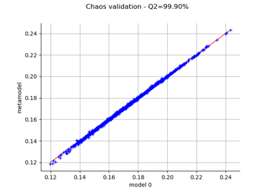

The cantilever beam model¶
We are interested in the vertical deviation of a diving board created by a child diver. We consider a child whose weight generates a force approximately equal to 300N (i.e. almost 30 kg). Because of the uncertainties in the weight of the person, we consider that the force is a random variable. The length of the diving board is between 2.5 m and 2.6 m. The Young modulus is uncertain and between 65 and 75 GPa, which corresponds to the fiberglass material, a material often used for diving boards. Uncertainties in the production of the material are taken into account in the Young modulus and the section modulus of the board.
We consider a cantilever beam defined by its Young’s modulus  , its length
, its length  and its
section modulus
and its
section modulus  .
One end of the cantilever beam is built in a wall and we apply a concentrated bending load
.
One end of the cantilever beam is built in a wall and we apply a concentrated bending load  at
the other end of the beam, resulting in a deviation
at
the other end of the beam, resulting in a deviation  .
.

The beam geometry¶
Inputs¶
,
, a =
,
)
,
, shift=0.0)
), Beta(
,
,
,
).
In the previous table  and
and  are the mean and the standard deviation of .
are the mean and the standard deviation of .
We assume that the random variables , , and are dependent
and associated with a gaussian copula which correlation matrix is:
![R = \begin{pmatrix}
1 & 0 & 0 & 0 \\
0 & 1 & 0 & 0 \\
0 & 0 & 1 & -0.2 \\
0 & 0 & -0.2 & 1
\end{pmatrix}]()
In other words, we consider that the variables and are negatively correlated:
when the length increases, the moment of inertia decreases.
Output¶
The vertical displacement at free end of the cantilever beam is:

A typical event of interest is when the beam deviation is too large which is a failure:

API documentation¶
- class CantileverBeam
Data class for the cantilever beam example.
Examples
>>> from openturns.usecases import cantilever_beam >>> # Load the cantilever beam model >>> cb = cantilever_beam.CantileverBeam()
- Attributes:
- dimThe dimension of the problem
dim=4.
- EBeta distribution
ot.Beta(0.9, 3.5, 65.0e9, 75.0e9)
- FLogNormal distribution
ot.LogNormalMuSigma()([300.0, 30.0, 0.0])
- LUniform distribution
ot.Uniform(2.5, 2.6)
- IBeta distribution
ot.Beta(2.5, 4.0, 1.3e-7, 1.7e-7)
- modelSymbolicFunction, the physical model of the cantilever beam.
- RCorrelationMatrix
Correlation matrix used to define the copula.
- copulaNormalCopula
Copula of the model.
- distributionComposedDistribution
The joint distribution of the parameters.
- independentDistributionComposedDistribution
The joint distribution of the parameters with independent copula.
Examples based on this use case¶

Create a polynomial chaos metamodel by integration on the cantilever beam

Compute Sobol’ indices confidence intervals


Use the Adaptive Directional Stratification Algorithm